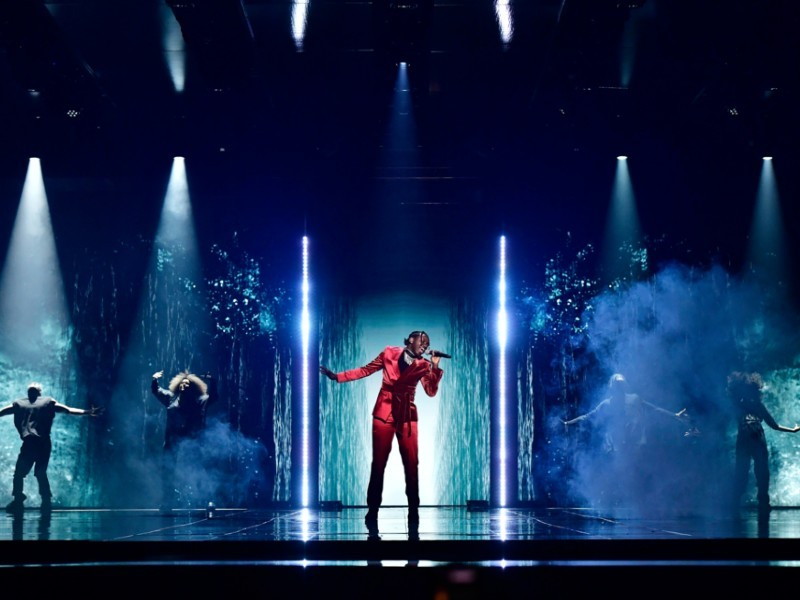
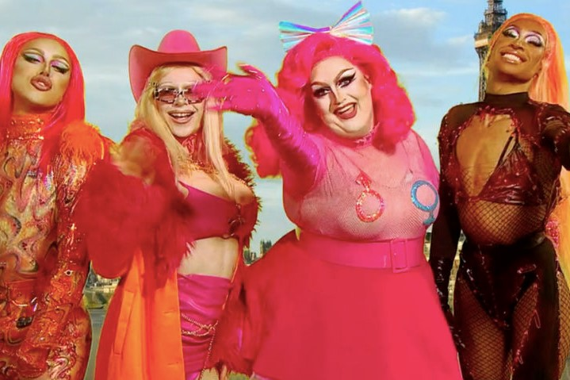

The European Broadcast Union has anounced the complet setlist of this year Contest. A total of 39 delegations will fly to Rotterdam on May to become the winner of the 65 edition of the Eurovision Song Contest.
Compared to last year, 2 countries have retire dbecause of diferent resons. First of them is Armenia that anounced past February that they will not take part of this year competition due the the political and economical problems that the country is suffering after the war against Azerbaijan. On the other hand we have Belarus, which song was rejected by the EBU because its lyrics where against the Contest rules.
The Grand Final will take place the 22nd of May at 9.00pm CET in The Ahoy Arena in Rotterdam. We are looking foward to see who will be the winner.
Loreen
The 2012 winner drops new song
Last Friday the eternal ESC250 winner surprised her fans with her latest song Sötvattentårar, in swedish, Freshwater Tears. It's the begining of a new era for the singer entirely in swedish. You can listen to her brand new song HERE
In this song, Loreen talks about the feeling of frustration when you think you're not enough though she tries to give a message of encouragement stating that things always get better.
She build up her career singing in english but after participating in Så Mycket Bättre, she felt that singing in her mother tongue helped to feel closer with the big chunk of her fans in Sweden.
Her full debut album is espected to be relesed later this year. We can't wait to hear it!!
Melfest 2021
Sweden crowned a winner

Last Night Sweden crowned a winner of the 61st Melodifestivalent. Tusse rose with the trophy after a long journey with 4 semifinals, a second chance and the Grand Final.
Tusse will represent Sweden in the next Eurovision Song Contest the 22nd of May in Rotterdam.
Rotterdam
News from The Ahoy Arena
Fresh news came last week from The Ahoy. They annouced that the stage will not be modified from the last year desing since it was not used due to the Pandemic. They also modified a bit the Logo witch the center point is the City of Rotterdam, where the Contest will be hold, and the diferent flags joint there.
U.K. Hun?
The Kweens of the UK

DING DANG DONG! London Calling! Last night aired a brand new episode of BBC Three's Rupaul's Drag Race UK Season 2. After a 7 month break due the Covid-19 the Queens reuninted back in the WorkRoom with te re-incorporation of Joe Black, the first eliminated Queen.
But the biggest surprise when was RuPaul anounced the thematic the Main Challenge: The RuRusivison. You've heard correct, they served what we all wanted: the Mashup of RPDR and the ESC.
Two teams where formed, but only one stole the show. The United Kingdolls, formed by the queens Awhora, Lawrence Cheney, Tayce and Bimini Bon Boulash, performed their version of U.K. Hun? which is number 1 on ITunes since this morning. Of course they won the Challenge and the iconic RuRuPeter Badge.
The fans where shocked and instatly started claiming to the new girl band to represent the UK in the following ESC. They followed the trajectory that the Frock Destroyers got last year.
We have made a desicion, we want the United Kingdolls on the ESC2022. Shantay you Stay!